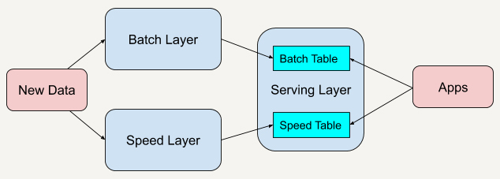
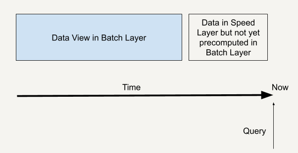
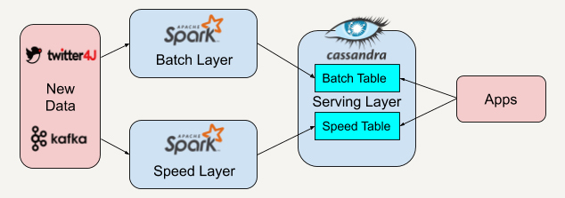
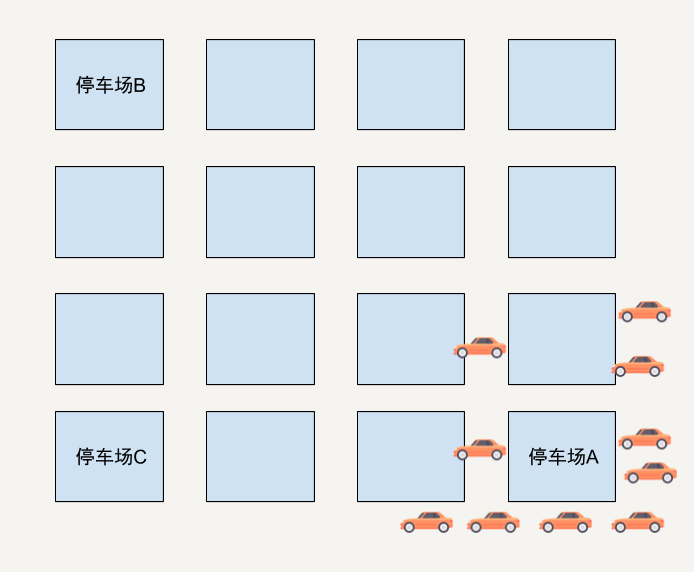
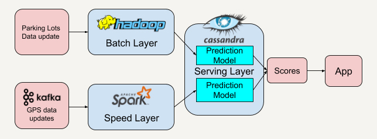
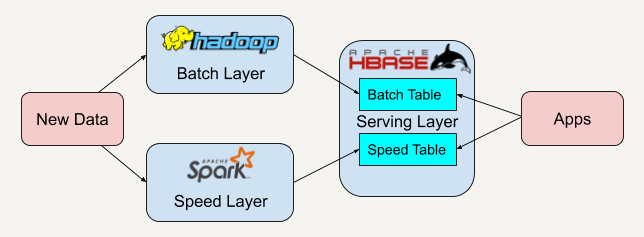

- 00 开篇词 从这里开始，带你走上硅谷一线系统架构师之路.md
- 01 为什么MapReduce会被硅谷一线公司淘汰？.md
- 02 MapReduce后谁主沉浮：怎样设计下一代数据处理技术？.md
- 03 大规模数据处理初体验：怎样实现大型电商热销榜？.md
- 04 分布式系统（上）：学会用服务等级协议SLA来评估你的系统.md
- 05 分布式系统（下）：架构师不得不知的三大指标.md
- 06 如何区分批处理还是流处理？.md
- 07 Workflow设计模式：让你在大规模数据世界中君临天下.md
- 08 发布_订阅模式：流处理架构中的瑞士军刀.md
- 09 CAP定理：三选二，架构师必须学会的取舍.md
- 10 Lambda架构：Twitter亿级实时数据分析架构背后的倚天剑.md
- 11 Kappa架构：利用Kafka锻造的屠龙刀.md
- 12 我们为什么需要Spark？.md
- 13 弹性分布式数据集：Spark大厦的地基（上）.md
- 14 弹性分布式数据集：Spark大厦的地基（下）.md
- 15 Spark SQL：Spark数据查询的利器.md
- 16 Spark Streaming：Spark的实时流计算API.md
- 17 Structured Streaming：如何用DataFrame API进行实时数据分析_.md
- 18 Word Count：从零开始运行你的第一个Spark应用.md
- 19 综合案例实战：处理加州房屋信息，构建线性回归模型.md
- 20 流处理案例实战：分析纽约市出租车载客信息.md
- 21 深入对比Spark与Flink：帮你系统设计两开花.md
- 22 Apache Beam的前世今生.md
- 23 站在Google的肩膀上学习Beam编程模型.md
- 24 PCollection：为什么Beam要如此抽象封装数据？.md
- 25 Transform：Beam数据转换操作的抽象方法.md
- 26 Pipeline：Beam如何抽象多步骤的数据流水线？.md
- 27 Pipeline IO Beam数据中转的设计模式.md
- 28 如何设计创建好一个Beam Pipeline？.md
- 29 如何测试Beam Pipeline？.md
- 30 Apache Beam实战冲刺：Beam如何run everywhere_.md
- 31 WordCount Beam Pipeline实战.md
- 32 Beam Window：打通流处理的任督二脉.md
- 33 横看成岭侧成峰：再战Streaming WordCount.md
- 34 Amazon热销榜Beam Pipeline实战.md
- 35 Facebook游戏实时流处理Beam Pipeline实战（上）.md
- 36 Facebook游戏实时流处理Beam Pipeline实战（下）.md
- 37 5G时代，如何处理超大规模物联网数据.md
- 38 大规模数据处理在深度学习中如何应用？.md
- 39 从SQL到Streaming SQL：突破静态数据查询的次元.md
- 40 大规模数据处理未来之路.md
- FAQ第一期 学习大规模数据处理需要什么基础？.md
- FAQ第三期 Apache Beam基础答疑.md
- FAQ第二期 Spark案例实战答疑.md
- 加油站 Practice makes perfect！.md
- 结束语 世间所有的相遇，都是久别重逢.md
10 Lambda架构：Twitter亿级实时数据分析架构背后的倚天剑
你好，我是蔡元楠。
今天我要与你分享的主题是Lambda架构。
通过这一讲，你可以了解什么是Lambda架构，以及它为什么能够成为Twitter亿级实时数据分析架构背后的“倚天剑”。
在学习了架构师的必备技能后，你是否已经摩拳擦掌，跃跃欲试地想要上手一个实际项目了呢？没问题，我们一起来看一个我的架构经历里的真实项目。
情况是这样的，我们正运行着广告精准投放业务，并且拥有海量的用户网站访问行为。我们需要进行用户行为分析来建立一个模型，然后根据这个模型来投放用户喜好的广告。
你可能想到了批处理架构。没错，这个时候数据批处理架构无疑是一种很好的选择。
可是我们不要忘了，之前讲过批处理架构有着高延时性的不足，而互联网用户行为的数据往往可以达到Pb或Eb，甚至是Zb的级别。做这种分析挖掘用户行为的任务，往往能耗时好几个小时甚至是几天。这样的话，我们根据模型精准投放给特定用户的广告就会有一定延时了。
那我们只用流处理架构行不行呢？
在广告精准投放的业务需求下，只用流处理架构会造成忽略了用户的历史网站访问行为，一些异常行为可能会让我们的服务投放错误的广告。
例如，用户A的电脑暂时借给用户B使用了一下，而用户B浏览了一些新的网站类型（与用户A不同）。这种情况下，我们无法判断用户A实际上是否对这类型的广告感兴趣，所以不能根据这些新的浏览记录给用户A推送广告。
这个时候应该怎么优化我们的架构呢？我们先把问题放一放，在介绍完了Lambda架构之后或许会对你有所启发。
Lambda架构
Lambda架构（Lambda Architecture）是由Twitter工程师南森·马茨（Nathan Marz）提出的大数据处理架构。这一架构的提出基于马茨在BackType和Twitter上的分布式数据处理系统的经验。
Lambda架构使开发人员能够构建大规模分布式数据处理系统。它具有很好的灵活性和可扩展性，也对硬件故障和人为失误有很好的容错性。
Lambda架构总共由三层系统组成：批处理层（Batch Layer），速度处理层（Speed Layer），以及用于响应查询的服务层（Serving Layer）。

在Lambda架构中，每层都有自己所肩负的任务。
批处理层存储管理主数据集（不可变的数据集）和预先批处理计算好的视图。
批处理层使用可处理大量数据的分布式处理系统预先计算结果。它通过处理所有的已有历史数据来实现数据的准确性。这意味着它是基于完整的数据集来重新计算的，能够修复任何错误，然后更新现有的数据视图。输出通常存储在只读数据库中，更新则完全取代现有的预先计算好的视图。
速度处理层会实时处理新来的大数据。
速度层通过提供最新数据的实时视图来最小化延迟。速度层所生成的数据视图可能不如批处理层最终生成的视图那样准确或完整，但它们几乎在收到数据后立即可用。而当同样的数据在批处理层处理完成后，在速度层的数据就可以被替代掉了。
本质上，速度层弥补了批处理层所导致的数据视图滞后。比如说，批处理层的每个任务都需要1个小时才能完成，而在这1个小时里，我们是无法获取批处理层中最新任务给出的数据视图的。而速度层因为能够实时处理数据给出结果，就弥补了这1个小时的滞后。
所有在批处理层和速度层处理完的结果都输出存储在服务层中，服务层通过返回预先计算的数据视图或从速度层处理构建好数据视图来响应查询。
好了，我们回到刚刚的问题中。我们如何做到既能实时分析用户新的网站浏览行为又能兼顾到用户的网站浏览行为历史呢？没错，就是利用Lambda架构。
所有的新用户行为数据都可以同时流入批处理层和速度层。批处理层会永久保存数据并且对数据进行预处理，得到我们想要的用户行为模型并写入服务层。而速度层也同时对新用户行为数据进行处理，得到实时的用户行为模型。
而当“应该对用户投放什么样的广告”作为一个查询（Query）来到时，我们从服务层既查询服务层中保存好的批处理输出模型，也对速度层中处理的实时行为进行查询，这样我们就可以得到一个完整的用户行为历史了。
一个查询就如下图所示，既通过批处理层兼顾了数据的完整性，也可以通过速度层弥补批处理层的高延时性，让整个查询具有实时性。

Lambda架构在硅谷一线大公司的应用已经十分广泛，我来带你一起看看一些实际的应用场景。
Twitter的数据分析案例
Twitter在欧美十分受欢迎，而Twitter中人们所发Tweet里面的Hashtag也常常能引爆一些热搜词汇，也就是Most Popular Hashtags。下面我来给你讲述一下如何利用Lambda架构来实时分析这些Hashtags。

在这个实际案例里，我们先用twitter4J的流处理API抓取实时的Twitter推文，同时利用Apache Kafka将抓取到的数据保存并实时推送给批处理层和速度层。
因为Apache Spark平台中既有批处理架构也兼容了流处理架构，所以我们选择在批处理层和速度层都采用Apache Spark来读取来自Apache Kafka的数据。
批处理层和速度层在分析处理好数据后会将数据视图输出存储在服务层中，我们将使用Apache Cassandra平台来存储他们的数据视图。Apache Cassandra将批处理层的视图数据和速度层的实时视图数据结合起来，就可以得到一系列有趣的数据。
例如，我们根据每一条Tweet中元数据（Metadata）里的location field，可以得知发推文的人的所在地。而服务层中的逻辑可以根据这个地址信息进行分组，然后统计在不同地区的人所关心的Hashtag是什么。
时间长达几周或者的几个月的数据，我们可以结合批处理层和速度层的数据视图来得出，而快至几个小时的数据我们又可以根据速度层的数据视图来获知，怎么样？这个架构是不是十分灵活？
看到这里，你可能会问，我在上面所讲的例子都是来自些科技巨头公司，如果我在开发中面对的数据场景没有这么巨大，又或者说我的公司还在创业起步阶段，我是否可以用到Lambda架构呢？
答案是肯定的！我下面将和你一起分享一个在硅谷旧金山创业公司的App后台架构。
Smart Parking案例分析
在硅谷旧金山地区上班生活的小伙伴肯定都知道，找停车位是一大难题。这里地少车多，每次出行，特别是周末，找停车位都要绕个好几十分钟才能找得到。
智能停车App就是在这样的背景下诞生的。这个App可以根据大规模数据所构建的视图推荐最近的车位给用户。
看到这里，我想先请你结合之前所讲到的广告精准投放案例，思考一下Lambda架构是如何应用在这个App里的，然后再听我娓娓道来。
好，我们来梳理一下各种可以利用到的大数据。
首先是可以拿到各类停车场的数据。这类数据的实时性虽然不一定高，但是数据的准确性高。那我们能不能只通过这类大数据来推荐停车位呢？
我来给你举个极端的例子。假设在一个区域有三个停车场，停车场A现在只剩下1个停车位了。
停车场B和C还有非常多的空位。而在这时候距离停车场比A较近的位置有10位车主在使用这个App寻求推荐停车位。如果只通过车主和停车场的距离和停车场剩余停车位来判断的话，App很有可能会将这个只剩下一个停车位的停车场A同时推荐给这10位用户。

结果可想而知，只有一位幸运儿能找到停车位，剩下的9位车主需要重新寻找停车位。
如果附近又出现了只有一个停车位的停车场呢？同理，这个App又会推荐这个停车场给剩下的9位用户。这时又只能有一位幸运儿找到停车位。
如此反复循环，用户体验会非常差，甚至会导致用户放弃这个App。
那我们有没有办法可以改进推荐的准确度呢？
你可能会想到我们可以利用这些停车场的历史数据，建立一个人工智能的预测模型，在推荐停车位的时候，不单单考虑到附近停车场的剩余停车位和用户与停车场的相邻距离，还能将预测模型应用在推荐里，看看未来的一段时间内这个停车场是否有可能会被停满了。
这时候我们的停车位推荐系统就变成了一个基于分数（Score）来推荐停车位的系统了。
好了，这个时候的系统架构是否已经达到最优了呢？你有想到应用Lambda架构吗？
没错，这些停车场的历史数据或者每隔半小时拿到的停车位数据，我们可以把它作为批处理层的数据。
那速度层的数据呢？我们可以将所有用户的GPS数据聚集起来，这些需要每秒收集的GPS数据刚好又是速度层所擅长的实时流处理数据。从这些用户的实时GPS数据中，我们可以再建立一套预测模型来预测附近停车场位置的拥挤程度。

服务层将从批处理层和速度层得到的分数结合后将得到最高分数的停车场推荐给用户。这样利用了历史数据（停车场数据）和实时数据（用户GPS数据）能大大提升推荐的准确率。
小结
在了解Lambda架构后，我们知道Lambda架构具有很好的灵活性和可扩展性。我们可以很方便地将现有的开源平台套用入这个架构中，如下图所示。

当开发者需要迁移平台时，整体的架构不需要改变，只需要将逻辑迁移到新平台中。
例如，可以将Apache Spark替换成Apache Storm。而因为我们有批处理层这一概念，又有了很好的容错性。
假如某天开发者发现逻辑出现了错误，只需要调整算法对永久保存好的数据重新进行处理写入服务层，经过多次迭代后整体的逻辑便可以被纠正过来。
从我的开发经验来看，现在有很多的开发项目可能已经有了比较成熟的架构或者算法了。
但是如果我们平时能多思考一下现有架构的瓶颈，又或者想一想现在的架构能不能改善得更好，有了这样的思考，在学习到这些经典优秀架构之后，说不定真的能让现有的架构变得更好。
也就是说，作为一名优秀的架构师，“现有的架构能不能做得更好？”应该是一个需要经常思考的问题。
思考题
你所做的项目开发能否利用Lambda架构呢？在生活中有没有哪些大数据处理场景可以利用Lambda架构呢？
欢迎在评论中留言，与我和其他同学一起讨论。
如果你觉得今天有些不一样的收获，也欢迎你把这篇文章分享给你的好友。
© 2019 - 2023 Liangliang Lee. Powered by gin and hexo-theme-book.